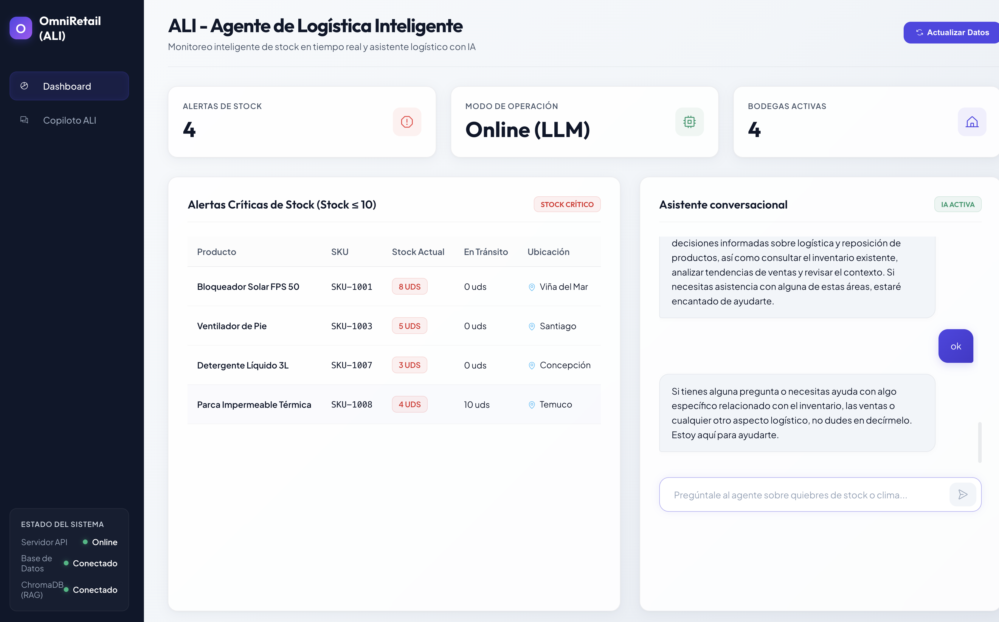
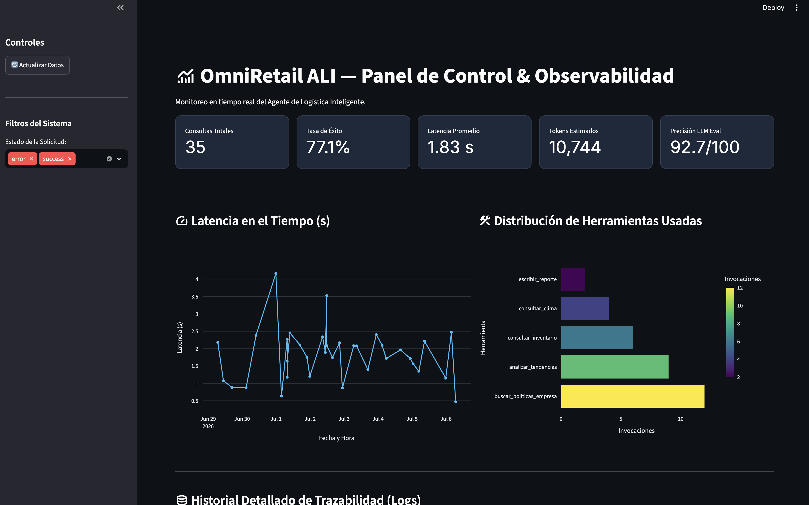

Contexto del problema, justificación del proyecto y objetivos de aprendizaje.
OmniRetail S.A. es una cadena de comercio minorista chilena que enfrentaba pérdidas operativas significativas debido a quiebres de stock en productos de alta demanda estacional y sobreinventario que inmovilizaba capital. Las decisiones se tomaban cruzando manualmente planillas desconectadas y manuales extensos de políticas de reposición.
Este caso fue elegido como contexto del proyecto semestral porque representa un escenario real donde convergen datos estructurados (base de datos transaccional) con información no estructurada (políticas en lenguaje natural), lo que permite aplicar de forma práctica los conceptos de Agentes de IA y Generación Aumentada por Recuperación (RAG) estudiados durante el semestre.
El proyecto permite aplicar y evaluar los siguientes conceptos clave de la asignatura:
Qué se hizo y por qué: formulación de prompts y pipeline de recuperación semántica.
Formulación de Prompts: Se definió un prompt de sistema estructurado utilizando tres técnicas: Role-prompting (asignando la identidad "ALI, Agente de Logística Inteligente"), Context Bounding (restringiendo las respuestas exclusivamente a la base de datos local y los fragmentos RAG) y Fórmulas Obligatorias (exigiendo al agente aplicar estrictamente las reglas de la guía corporativa).
Pipeline RAG: Las políticas de inventario y guías de reposición en formato Markdown fueron fragmentadas en bloques de 500 caracteres (overlap: 50), vectorizadas localmente con el modelo open-source all-MiniLM-L6-v2 de Sentence-Transformers e indexadas en ChromaDB. El SemanticRetriever calcula los 3 fragmentos más relevantes por similitud de coseno y los inyecta en el prompt del LLM en tiempo de ejecución.
# SemanticRetriever: Recuperación de contexto RAG
def retrieve_policies(self, query: str, limit: int = 3) -> str:
# 1. Convierte la query del usuario a embeddings locales
query_vector = self.embedding_model.encode(query).tolist()
# 2. Busca por similitud de coseno en ChromaDB
results = self.vector_collection.query(
query_embeddings=[query_vector],
n_results=limit
)
# 3. Retorna los fragmentos formateados para el LLM
return "\n\n".join(results['documents'][0])Decisiones de diseño basadas en Clean Architecture y su justificación técnica.
Se adoptó Clean Architecture para separar las responsabilidades en capas desacopladas. Esta decisión de diseño permite que cada componente (interfaz de usuario, lógica de negocio, acceso a datos) pueda ser probado, reemplazado o extendido de manera independiente.
La capa de interfaz presenta dos clientes: un Chat interactivo desarrollado en React (puerto 19051) y un Dashboard de observabilidad en Streamlit (puerto 18052). Ambos se conectan al Backend en FastAPI (puerto 18050), que orquesta la ejecución del agente conversacional mediante LangChain AgentExecutor y el planificador lógico GoalOrientedPlanner.
Integración de herramientas, planificación de metas y memoria conversacional.
El agente expone cinco herramientas (@tool) que le permiten consultar stock, analizar tendencias de ventas, obtener pronósticos de clima, buscar políticas mediante RAG y exportar reportes de reposición. El GoalOrientedPlanner define secuencias de ejecución ordenadas para que el agente no improvise.
La memoria de conversación utiliza ConversationBufferWindowMemory de LangChain con una ventana de 10 turnos (k=10), equilibrando la retención de contexto con la eficiencia del prompt. Este fue un aprendizaje importante: una ventana demasiado grande saturaba el prompt y degradaba la precisión, mientras que una muy pequeña hacía que el agente perdiera el hilo de la conversación.
Cada herramienta resuelve un aspecto específico del problema:
consultar_inventario: Stock actual y en tránsito desde SQLite.analizar_tendencias: Ventas acumuladas y promedios diarios.consultar_clima: Pronóstico meteorológico para demanda estacional.buscar_politicas_empresa: Búsqueda semántica RAG en ChromaDB.escribir_reporte_reposicion: Exportación del reporte Markdown en disco.El GoalOrientedPlanner define la secuencia de pasos: consultar inventario, evaluar el clima, buscar las políticas RAG, calcular la cantidad de reposición según ROP/EOQ, y generar el reporte final. Esta estructura evita respuestas improvisadas del LLM.
Métricas clave, justificación de negocio y propuestas de experimentación.
Cada interacción del agente genera un registro en el archivo de trazas agent_observability.jsonl. Capturamos cuatro métricas clave justificadas por el negocio: latencia (para asegurar la adopción de los operarios), tasa de errores (fiabilidad del servicio logístico), uso de recursos (control de costos de tokens) y precisión (LLM-as-a-Judge) (evitar compras incorrectas y dinero inmovilizado).
Análisis y Propuestas de Rediseño: Los datos demostraron que la API del clima representa el 60% de la latencia (2.5s). Con esta base empírica, proponemos tres experimentos estructurados de mejora: una prueba A/B con enrutador semántico local para eliminar costos de tokens en saludos, un experimento de caché de clima local de 6 horas, y un test de ventana de memoria (k-Window) para balancear contexto e inflación de tokens.


Figuras 2 y 3: Dashboard de observabilidad en Streamlit (clic para ampliar).
Protocolos de contingencia y consideraciones éticas aplicadas al proyecto.
Modo Offline Fallback: Si las APIs en la nube (Gemini, GitHub Models) fallan o no hay conexión a internet, el TripleFallbackLLMProvider intercepta la excepción de red y activa un motor heurístico local. Este motor realiza consultas SQL directas en SQLite para identificar productos con stock crítico, asegurando que el jefe de tienda siempre pueda gestionar el reabastecimiento de emergencia sin depender de internet.
Privacidad: No se registran datos personales ni credenciales sensibles en los archivos de telemetría locales. Los datos transaccionales se procesan y persisten de forma local, garantizando la soberanía de la información comercial.
# Lógica de contingencia Offline Fallback
def _sql_offline_fallback(self, query: str) -> str:
# Si no hay conexión, consulta alertas transaccionales directas
connection = sqlite3.connect("data/omniretail.db")
cursor = connection.cursor()
cursor.execute("""
SELECT sku, nombre, stock_actual, stock_critico
FROM productos WHERE stock_actual <= stock_critico
""")
critical_items = cursor.fetchall()
# Genera una respuesta heurística estructurada localmente
response = "Offline Fallback: Alertas de Stock Crítico:\n"
for item in critical_items:
response += f"- {item[1]} (SKU: {item[0]}): Stock {item[2]} (Mínimo: {item[3]})\n"
return responseReflexión sobre el proceso de desarrollo a lo largo del semestre.
La evolución del proyecto a lo largo de los tres hitos del semestre permitió consolidar de forma práctica los conceptos teóricos de la asignatura. El primer hito se enfocó en el diseño de prompts y el pipeline RAG. El segundo hito integró el agente funcional con herramientas y una interfaz en Streamlit. El tercer hito migró la solución a una arquitectura de microservicios (FastAPI + React) e incorporó la suite de observabilidad y el dashboard de monitoreo.
Un aprendizaje clave fue comprender que un LLM no es el dueño de la verdad: es un procesador de lenguaje natural, y la veracidad debe provenir siempre de fuentes controladas (SQLite para datos transaccionales y ChromaDB para políticas corporativas). La combinación de RAG, planificación estructurada y observabilidad resultó ser una solución robusta y auditable para el caso de OmniRetail S.A.